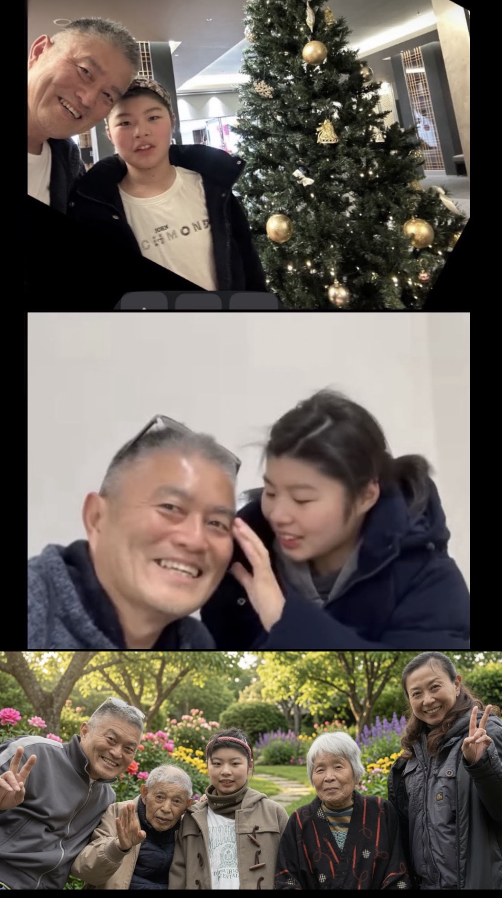

現在はロンドンで個人事務所を運営しながら、妻・葉子と共に91歳の父・孝夫と89歳の母・太恵の介護を支える日々を送っている。また、京都で暮らす娘・真沙との毎月一泊二日の時間も、欠かせない大切なひとときだ。
振り返れば、私の60年は整然とした一本の軌跡などではなく、幾多の経験と出会いに塗りつぶされた「点」の集積だった。
スポーツに夢中だった少年時代、音楽に魅せられた青春、金融の世界での挑戦、海外生活、起業、結婚、離婚、そして新たな家族との出会い——。
その一つひとつの点が今、意味を持って繋がり、現在の自分を形づくっている（Connecting the dots! by Steve Jobs）。
これからも、多くの方々とのご縁と感謝を胸に、新しい歩みを続けていきたい。